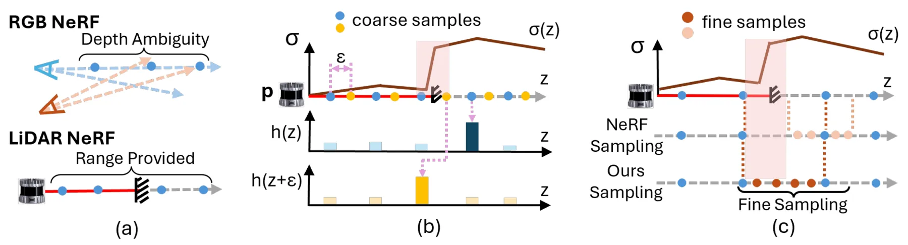
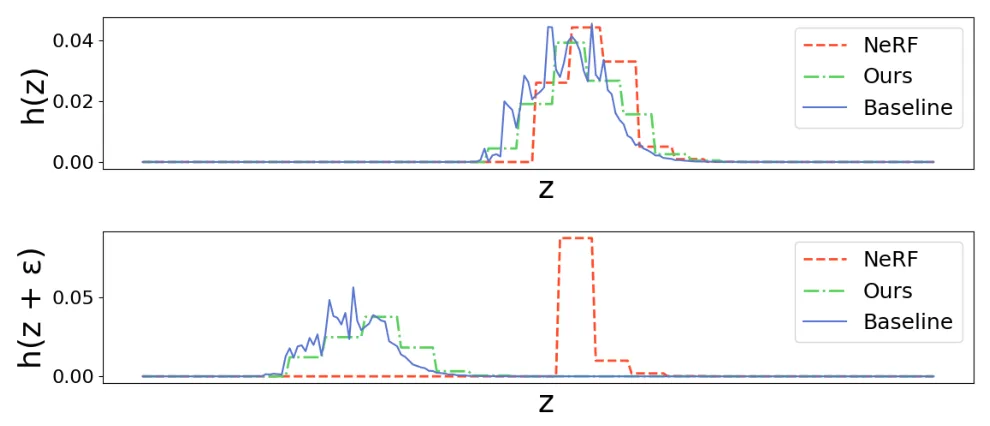
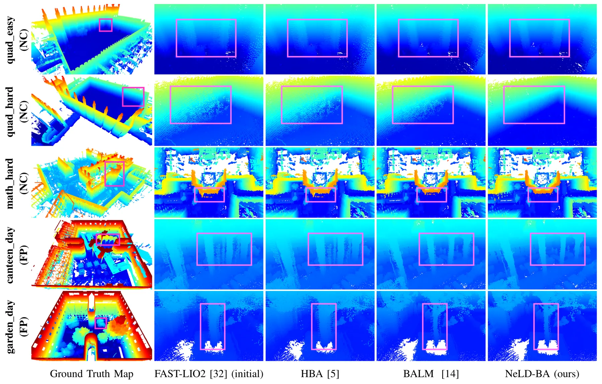
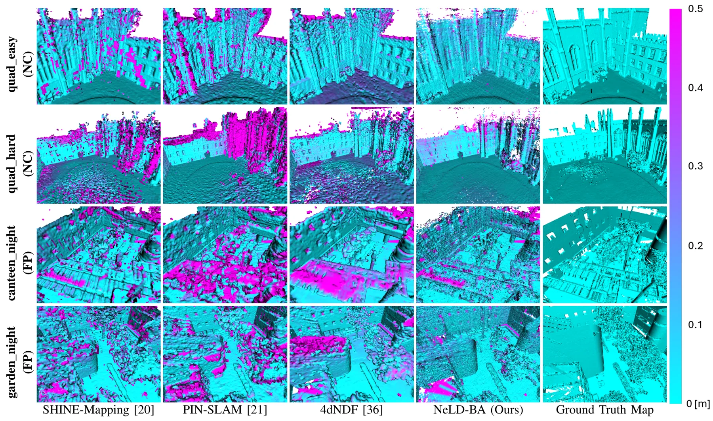
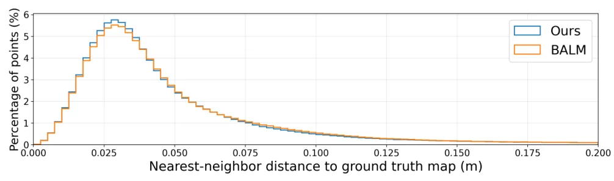
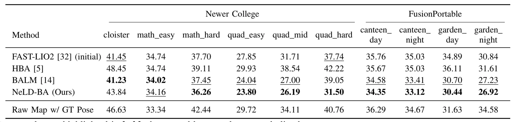
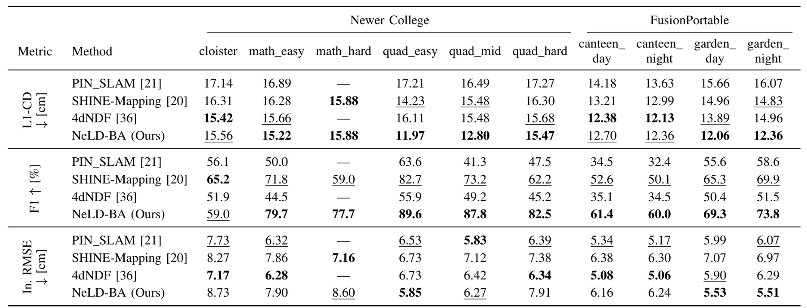
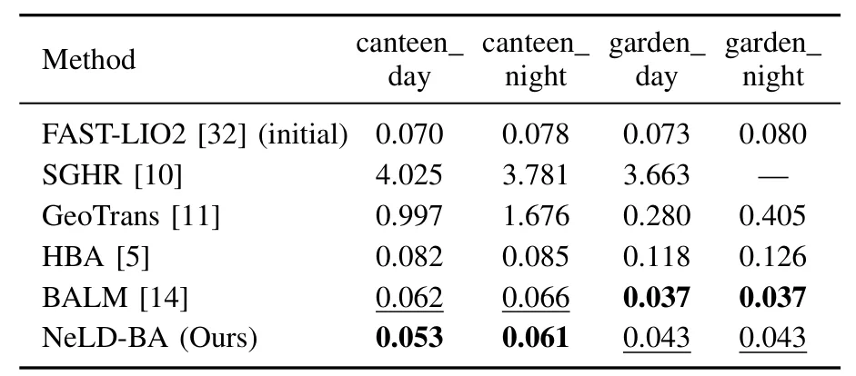
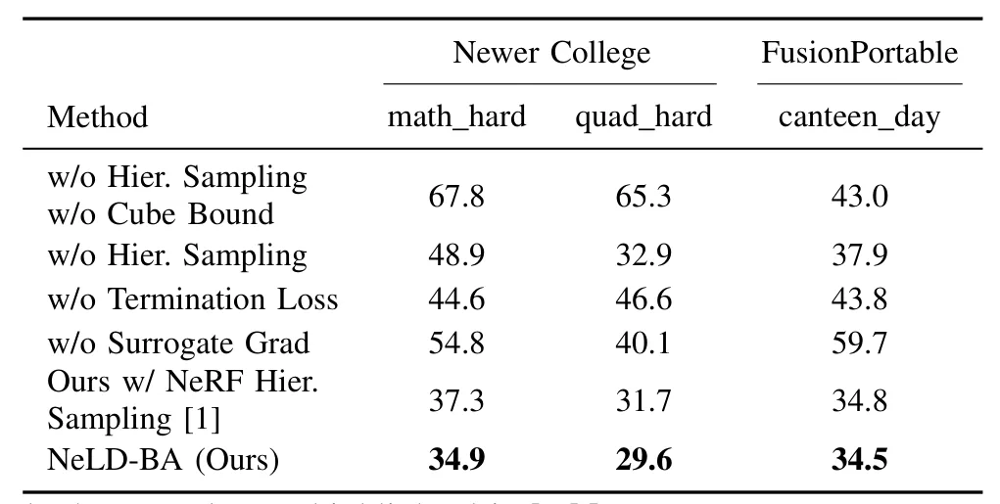

神经 LiDAR 束调整Neural LiDAR Bundle Adjustment
高度相关于 LiDAR SLAM 后端、点云 registration 和神经隐式地图；理论与实证都有，但仍需验证运行效率和与经典 LIO/ICP 的工程可比性。
一句话工作总结
把 LiDAR NeRF、点云配准和位姿 bundle adjustment 合到同一后端优化框架。
摘要
该工作分析 LiDAR NeRF 与 RGB NeRF 的关键差异，指出体采样密度对 LiDAR NeRF 表现有重要影响，并据此提出 NeLD-BA：使用高效 LiDAR ray 体采样来联合优化 LiDAR 地图和传感器位姿。论文在 Newer College 与 FusionPortable 数据集上展示了多视点点云配准和 3D mapping 的强性能，并计划开源代码。
Recent research has achieved remarkable novel view rendering and scene reconstruction results with Neural Radiance Field (NeRF), including extensions to the LiDAR modality. Few studies have, however, explored the key design differences between RGB NeRFs and LiDAR NeRFs, particularly considering their underlying working principles. In this work, we provide both theoretical and empirical evidence suggesting that the density of volume sampling plays a significant role in LiDAR NeRF. Based on this finding, we propose a novel Neural LiDAR Bundle Adjustment (NeLD-BA) algorithm, which is tailored using efficient volume sampling of LiDAR rays for joint optimization of LiDAR map and poses. Extensive experiments are performed using the Newer College and FusionPortable datasets to demonstrate the proposed NeLD-BA's state-of-the-art performance in multi-view point cloud registration and 3D mapping. We will open-source our code for the community.
中文解读摘录
- 链接：https://arxiv.org/abs/2607.04169 ｜ PDF：https://arxiv.org/pdf/2607.04169
- 中文题名：神经 LiDAR 束调整
- 关键信息：提出 NeLD-BA，用 LiDAR NeRF 的高效体采样联合优化 LiDAR 地图与位姿；论文声称在 Newer College 与 FusionPortable 上实现多视点点云配准和 3D mapping SOTA。
- 为什么值得看：它把 bundle adjustment、点云配准和神经场 LiDAR 建图放到同一优化框架内，是 LiDAR SLAM/建图中“神经隐式地图 + 位姿联合优化”的直接信号。
- 需要核查：采样密度理论假设、动态物体/稀疏扫描下鲁棒性、与 ICP/GICP/LIO 系统的运行时间和漂移对比，以及代码开源兑现情况。
图表/页面预览

{kind=link}

{kind=link}

{kind=link}

{kind=link}

{kind=link}

{kind=link}

{kind=link}

{kind=link}

{kind=link}
